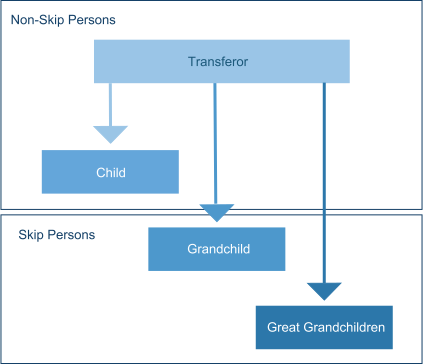
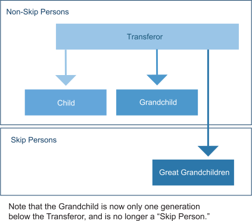

When making transfers to lineal descendants, what happens if the parent of a skip-person dies before the transfer? Put simply, the successive generations move up one step to fill the void.
Here is the situation before the death:
Here is the situation after the child's death:

What happens if there are no surviving lineal descendants?
In that case, this same adjustment to skip persons can be made for any of the descendants of the transferor's parents or the transferor's spouse's parents. But this only applies when the transferor has no lineal descendants of his/her own.